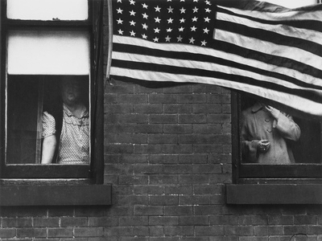
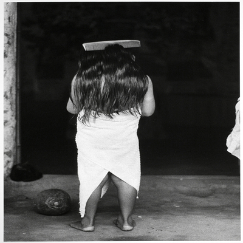

There was never a more prolific photographer than Robert Frank. From 1941,
he worked as a commercial photographer in Zurich, Basel and Geneva.
In 1947, he found a job as a fashion photographer in the US. He used his 35mm
Leica, unconventional at the time. Between 1950 and ’59 he turned his attention
to street photography and photojournalism.
This is where he became most famous. The Guggenheim Fellowship allowed him to
travel the country, resulting in his most famous work: The Americans.
He worked closely to Walker Evans and became one of the world’s most famous
street photographers. He completed his visuals with text, written straight onto
the negatives and prints.

Born in Mexico City, Graciela Iturbide studied filmmaking at the Centro Universitario
de Estudios Cinematográficos between 1969 and 1972, and worked as an assistant to
photographer Manuel Alvarez Bravo, who stimulated her interest in photography. She met
to Henri Cartier-Bresson while traveling in Europe, and in 1978, was one of the founding
members of the Mexican Council of Photography. Besides Cartier-Bresson and Alvarez Bravo,
Tina Modotti was in important influence on Iturbide. A major exhibition of her work,
"External Encounters, Internal Imaginings: Photographs of Graciela Iturbide," was
presented at the San Francisco Museum of Modern Art, in addition to retrospectives at the
Museo de Arte Contemporáneo de Monterrey in Mexico, and at the Philadelphia Museum of Art.
A monograph on her work, Graciela Iturbide: Images of the Spirit (1996), accompanied her
Philadelphia show.
Iturbide's exquisite high-contrast black-and-white prints convey the starkness of life for
many of her subjects. Traveling through Mexico, Ecuador, Venezuela, Panama, and the Mexican
community of East Los Angeles, Iturbide documents the uneasy cohabitation of ancient cultural
rituals and contemporary adaptations and interpretations. One of her particular interests
has been the role of women, and since 1979 she has photographed the Zapotec Indians of Juchitán,
Oaxaca, among whom women are commonly accorded places of power, and stereotypical gender
roles are frequently subverted. Iturbide uses photography to try to understand Mexico in its
totality, as a combination of indigenous practices, and imported and assimilated Catholic
religious practices, and foreign economic trade.
Meredith Fisher
Handy et al. Reflections in a Glass Eye: Works from the International Center of Photography
Collection, New York: Bulfinch Press in association with the International Center of
Photography, 1999, p. 219.

This image is part of Graciela Iturbide’s series on the Juchitan indigenous culture,
a major focus of her work from 1979 to 1988. Located in the state of Oaxaca, Mexico, the
Juchitan is a matriarchal society in which women are in charge of everything from commerce
to religious ceremonies. In The Cemetery, taken in 1988, Iturbide depicts a woman carrying
firewood through a cemetery made up of modest adobe tombs. Swallows circle around, filling
the frame of the image. The scene is beautifully surreal, but also foreboding. The photographer
creates her own reality, moving past Mexico’s Catholic traditions into Indian mysticism.
Source